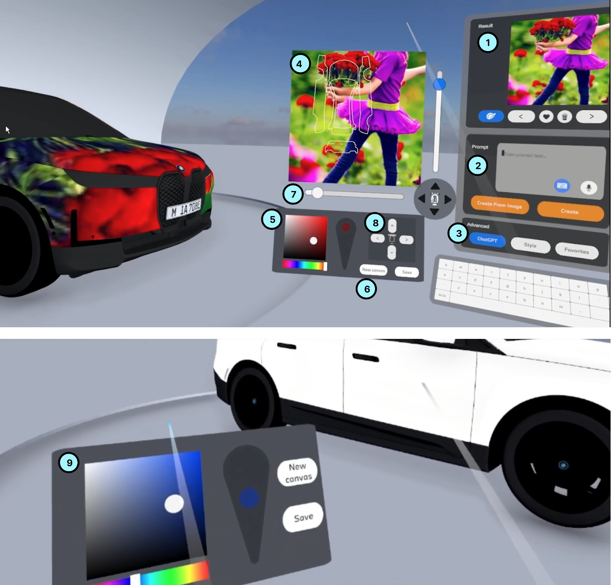

Design and Evaluation of a Generative AI-Driven VR Texturing Tool: A Design Science Approach

Venue. ECIS (2025)
Materials.
link
PDF [link]
Abstract. The integration of generative AI (GenAI) with virtual reality (VR) offers new opportunities for the automotive industry to enhance customer engagement by enabling customizable textures for 3D car models and sharing them within VR. However, creating textures for VR platforms remains challenging due to the expertise required for traditional texturing tools and the limited customization options VR platforms provide. This study introduces GenVRTex, a GenAI-driven VR texturing tool that helps novice users generate high-quality textures through text prompts and drawings. Developed through a Design Science Research approach in collaboration with an industrial partner, GenVRTex incorporates ten design guidelines addressing user interaction, prompt control, and texture creation. A qualitative evaluation with nine designers inexperienced in VR texturing confirmed the tool's usability and effectiveness while highlighting potential improvements, including multimodal inputs and iterative GenAI input-output management. This research provides insights into GenAI-VR integration from an HCI perspective and outlines future research directions.
Acknowledgements. We thank all user study participants and domain experts, as well as the anonymous reviewers, for their time and valuable input. In this work, we used ChatGPT-4 Omni to refine phrasing and enhance readability while ensuring that all content remained self-authored.
Link to this page: